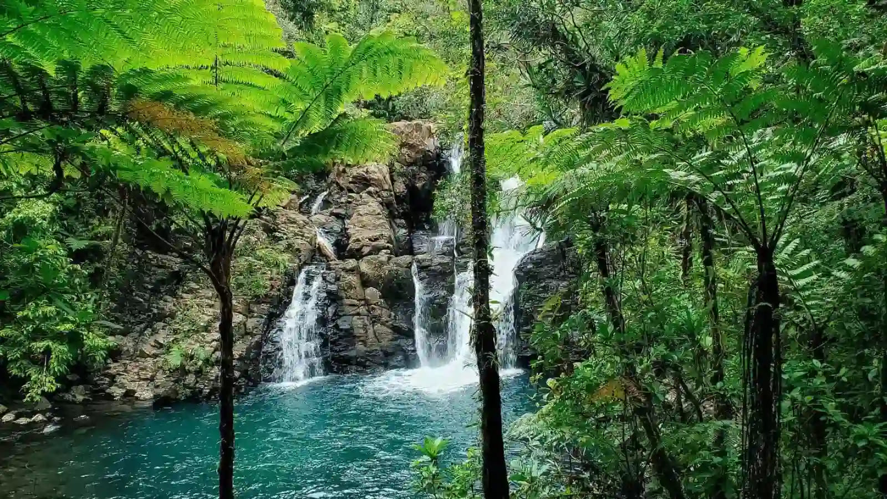
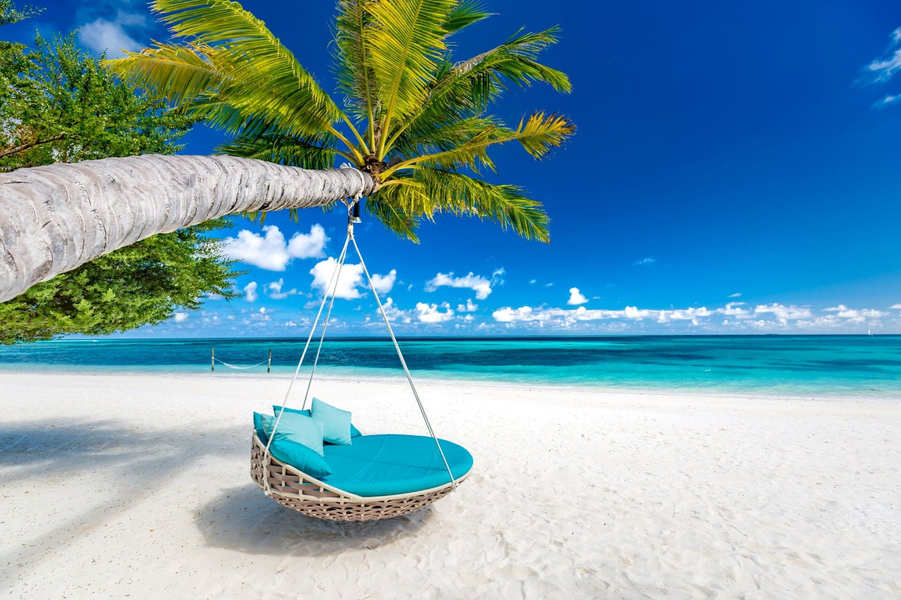
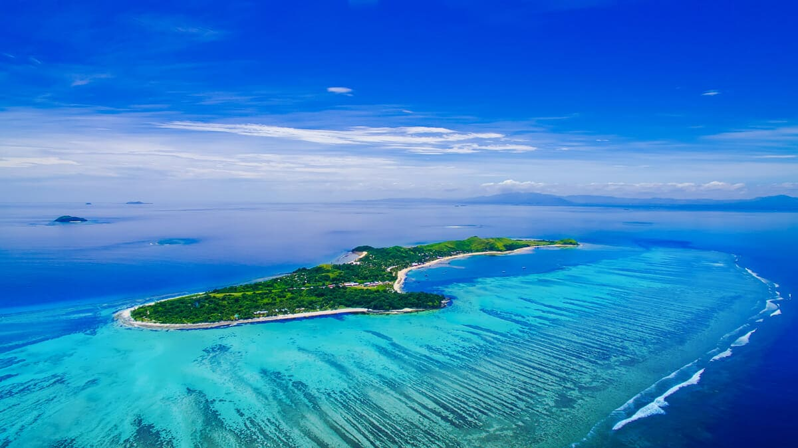
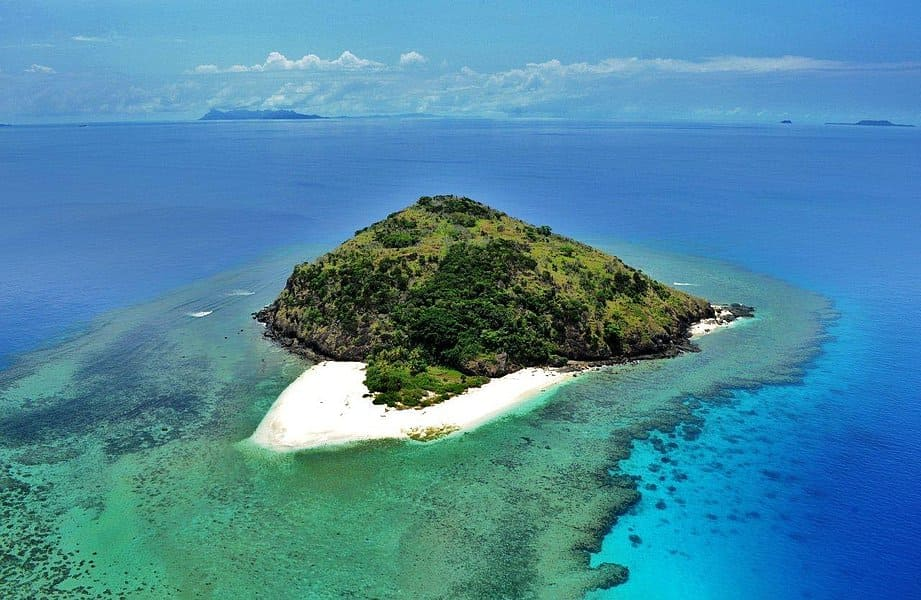

Fiji - Tropical Paradise in the South Pacific

Introduction
Fiji is an archipelago of more than 300 islands known for its crystal-clear waters, coral reefs, and lush tropical landscapes. It is famous for its warm hospitality and vibrant culture.
Visitors can relax on pristine beaches, snorkel in vibrant coral reefs, or experience traditional Fijian ceremonies and village life. Fiji offers a perfect mix of adventure, culture, and relaxation.
Quick Facts
- Capital: Suva
- Population: Approximately 900,000
- Language: English, Fijian, Hindi
- Currency: Fijian Dollar (FJD)
- Best Time to Visit: May to October (dry season)
Explore Major Destinations
Jump to a specific destination
\r\n
Suva

Region: Viti Levu
Suva is the capital and largest city of Fiji, known for its colonial architecture, bustling markets, and cultural institutions.
Explore the Fiji Museum, stroll along the waterfront, and experience local markets. Suva is the cultural heart of Fiji, blending modern city life with traditional Fijian culture.
Must-See Attractions
- Fiji Museum - Exhibits on Fijian history and culture
- Suva Municipal Market - Fresh local produce and crafts
- Thurston Gardens - Botanical gardens with tropical plants
- Albert Park - Historic city park with monuments
- Suva Waterfront - Scenic coastal walks
Back to top
Nadi

Region: Viti Levu
Nadi is a popular tourist hub in Fiji, home to the main international airport and gateway to resort islands. It is famous for beaches, spas, and vibrant markets.
Visit the Sri Siva Subramaniya Temple, relax on Denarau Island beaches, and explore local markets for handicrafts. Nadi combines convenience and tropical charm for visitors.
Must-See Attractions
- Sri Siva Subramaniya Temple - Largest Hindu temple in the Southern Hemisphere
- Denarau Island - Luxury resorts and golf courses
- Nadi Market - Fresh produce and souvenirs
- Garden of the Sleeping Giant - Orchid gardens and tropical plants
- Mamanuca Islands - Island hopping and snorkeling adventures
Back to top
Mana Island

Region: Mamanuca Islands
Mana Island is a serene getaway with crystal-clear waters, coral reefs, and luxury resorts. It is ideal for snorkeling, diving, and relaxation.
Enjoy water sports, sunbathe on white sand beaches, and explore the vibrant marine life around the island. Mana Island offers a perfect tropical escape for travelers.
Must-See Attractions
- Snorkeling and Diving - Explore vibrant coral reefs
- Resorts - Luxury accommodation and beachside amenities
- Beachfront Activities - Kayaking, paddleboarding, and swimming
- Island Walks - Scenic trails and viewpoints
- Sunset Views - Stunning sunsets over the Pacific Ocean
Back to top
Yadua Island

Region: Northern Fiji
Yadua Island is a protected nature reserve, home to rare flora and fauna. It offers opportunities for eco-tourism and wildlife observation.
Visitors can explore pristine beaches, observe birdlife, and learn about conservation efforts. Yadua Island provides a peaceful retreat for nature enthusiasts.
Must-See Attractions
- Nature Reserve - Conservation area with endemic species
- Birdwatching - Rare and native bird species
- Pristine Beaches - Secluded and unspoiled
- Eco Tours - Guided tours to learn about local ecosystem
- Snorkeling - Explore shallow reefs and marine life
Back to top
Travel Tips for Fiji
Here are some essential tips for traveling in Fiji.
- Transport: Boats and ferries connect islands; domestic flights are available between major islands.
- Currency: Fijian Dollar (FJD); widely accepted, carry cash for smaller islands.
- Weather: Tropical climate; May to October is the dry season and best for travel.
- Respect Culture: Follow local customs, especially in villages and during ceremonies.
- Adventure: Many water activities; always check safety guidelines and local advice.
← Back to Oceania Home